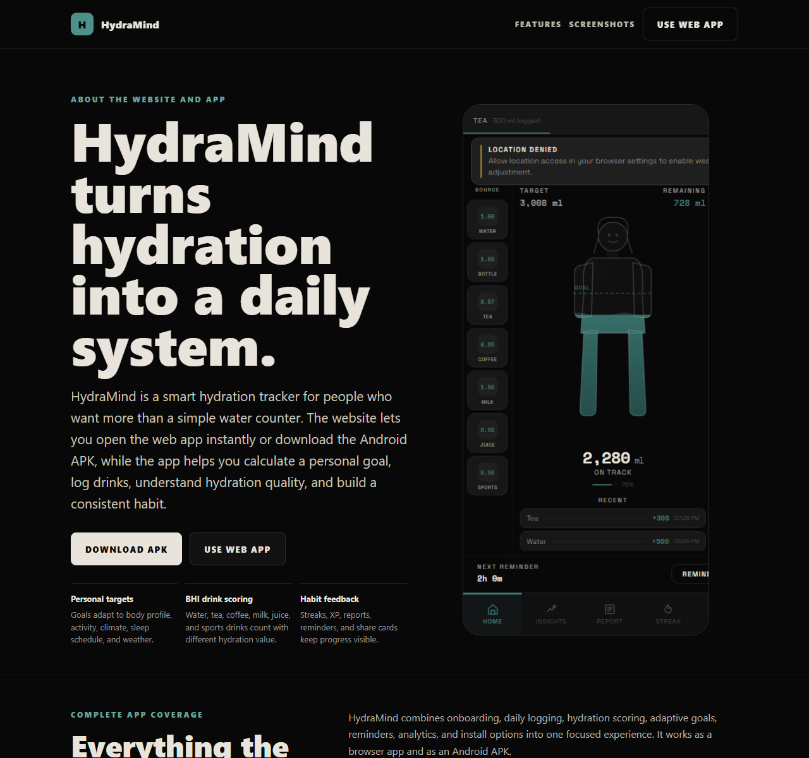

01
Guided onboarding
Collects age, gender, weight, height, activity, climate, health conditions, and schedule details to calculate a better daily target.
HydraMind is a smart hydration tracker for people who want more than a simple water counter. The website lets you open the web app instantly or download the Android APK, while the app helps you calculate a personal goal, log drinks, understand hydration quality, and build a consistent habit.

HydraMind combines onboarding, daily logging, hydration scoring, adaptive goals, reminders, analytics, and install options into one focused experience. It works as a browser app and as an Android APK.
Collects age, gender, weight, height, activity, climate, health conditions, and schedule details to calculate a better daily target.
Uses personal data and weather context to adjust the recommended daily intake instead of giving everyone the same target.
Each beverage has a hydration impact score, so logged drinks contribute to effective intake more realistically.
One-tap amounts, beverage selection, undo support, and a dedicated quick-log page make repeated tracking easier.
Users can set hydration reminders and receive browser or app-style prompts when it is time to drink.
Progress screens show intake trends, goal completion, streaks, hydration score, and daily consistency patterns.
Small achievement loops make hydration feel trackable without turning the app into a distraction.
Users can generate a visual hydration stats card and save or share it from supported devices.
The about page offers both options, and the web app can remind users to download the Android APK twice a week.
These captures are taken from the current website and app build: the daily tracker, the quick logging tool, and the download page users can visit before opening the web app or installing the APK.


The website introduces HydraMind, then sends users into the app experience. From there, the app calculates a target, tracks intake, and nudges users toward the APK option without interrupting every visit.
Install the Android APK for a mobile-app experience, or continue with the web app in your browser. Both options use the same core hydration tracker.